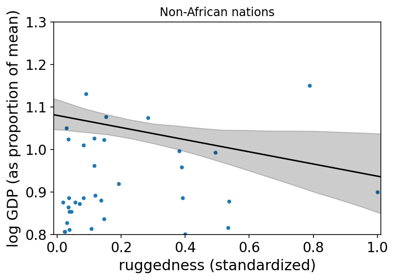

8. Conditional Manatees
Contents

8. Conditional Manatees¶
Imports and utility functions¶
# Install packages that are not installed in colab
try:
import google.colab
!pip install -q watermark
!pip install git+https://github.com/ksachdeva/rethinking-tensorflow-probability.git
except:
pass
%load_ext watermark
# Core
import collections
import numpy as np
import arviz as az
import pandas as pd
import xarray as xr
import tensorflow as tf
import tensorflow_probability as tfp
# visualization
import matplotlib.pyplot as plt
from rethinking.data import RethinkingDataset
from rethinking.data import dataframe_to_tensors
from rethinking.mcmc import sample_posterior
# aliases
tfd = tfp.distributions
tfb = tfp.bijectors
Root = tfd.JointDistributionCoroutine.Root
2022-01-18 03:04:56.743581: W tensorflow/stream_executor/platform/default/dso_loader.cc:64] Could not load dynamic library 'libcudart.so.11.0'; dlerror: libcudart.so.11.0: cannot open shared object file: No such file or directory
2022-01-18 03:04:56.743616: I tensorflow/stream_executor/cuda/cudart_stub.cc:29] Ignore above cudart dlerror if you do not have a GPU set up on your machine.
%watermark -p numpy,tensorflow,tensorflow_probability,arviz,scipy,pandas
numpy : 1.21.5
tensorflow : 2.7.0
tensorflow_probability: 0.15.0
arviz : 0.11.4
scipy : 1.7.3
pandas : 1.3.5
# config of various plotting libraries
%config InlineBackend.figure_format = 'retina'
8.1 Building an interaction¶
8.1.1 Making a rugged model¶
Code 8.1¶
Every inference is conditional on something whether we notice it or not !
So far in the book, it was assumed that the predictor variable has an independent association with the mean of the outcome. What if want to allow the association to be conditional ?
d = RethinkingDataset.Rugged.get_dataset()
# make log version of outcome
d["log_gdp"] = d["rgdppc_2000"].pipe(np.log)
# extract countries with GDP data
dd = d[d["rgdppc_2000"].notnull()].copy()
# rescale variables
dd["log_gdp_std"] = dd.log_gdp / dd.log_gdp.mean()
dd["rugged_std"] = dd.rugged / dd.rugged.max()
# split countries into Africa and not-Africa
d_A1 = dd[dd["cont_africa"] == 1] # Africa
d_A0 = dd[dd["cont_africa"] == 0] # not Africa
Note - terrain ruggedness is divided by the maximum value observed
Code 8.2¶
def model_8_1(rugged_std):
def _generator():
alpha = yield Root(tfd.Sample(tfd.Normal(loc=1., scale=1., name='alpha'), sample_shape=1))
beta = yield Root(tfd.Sample(tfd.Normal(loc=0., scale=1., name='beta'), sample_shape=1))
sigma = yield Root(tfd.Sample(tfd.Exponential(rate=1., name='sigma'), sample_shape=1))
mu = alpha + beta * (rugged_std - 0.215)
log_gdp_std = yield tfd.Independent(tfd.Normal(loc=mu, scale=sigma), reinterpreted_batch_ndims=1)
return tfd.JointDistributionCoroutine(_generator, validate_args=False)
Code 8.3¶
jdc_8_1 = model_8_1(rugged_std=dd["rugged_std"].values)
sample_alpha, sample_beta, sample_sigma, _ = jdc_8_1.sample(1000)
# set up the plot dimensions
plt.subplot(xlim=(0, 1), ylim=(0.5, 1.5),
xlabel="ruggedness", ylabel="log GDP")
plt.gca().axhline(dd.log_gdp_std.min(), ls="--")
plt.gca().axhline(dd.log_gdp_std.max(), ls="--")
# draw 50 lines from the prior
rugged_seq = np.linspace(-0.1, 1.1, num=30)
jdc_8_1_test = model_8_1(rugged_std=rugged_seq)
ds, _ = jdc_8_1_test.sample_distributions(value=[
sample_alpha,
sample_beta,
sample_sigma,
None
])
mu = ds[-1].distribution.loc
for i in range(50):
plt.plot(rugged_seq, mu[i], "k", alpha=0.3)
2022-01-18 03:04:59.440981: W tensorflow/stream_executor/platform/default/dso_loader.cc:64] Could not load dynamic library 'libcuda.so.1'; dlerror: libcuda.so.1: cannot open shared object file: No such file or directory
2022-01-18 03:04:59.441018: W tensorflow/stream_executor/cuda/cuda_driver.cc:269] failed call to cuInit: UNKNOWN ERROR (303)
2022-01-18 03:04:59.441043: I tensorflow/stream_executor/cuda/cuda_diagnostics.cc:156] kernel driver does not appear to be running on this host (fv-az269-271): /proc/driver/nvidia/version does not exist
2022-01-18 03:04:59.441236: I tensorflow/core/platform/cpu_feature_guard.cc:151] This TensorFlow binary is optimized with oneAPI Deep Neural Network Library (oneDNN) to use the following CPU instructions in performance-critical operations: AVX2 FMA
To enable them in other operations, rebuild TensorFlow with the appropriate compiler flags.

Code 8.4¶
np.sum(np.abs(sample_beta) > 0.6) / sample_beta.shape[0]
0.526
Code 8.5¶
tdf = dataframe_to_tensors('Rugged', dd, ['rugged_std', 'log_gdp_std'])
def model_8_1(rugged_std):
def _generator():
alpha = yield Root(tfd.Sample(tfd.Normal(loc=1., scale=0.1, name='alpha'), sample_shape=1))
beta = yield Root(tfd.Sample(tfd.Normal(loc=0., scale=0.3, name='beta'), sample_shape=1))
sigma = yield Root(tfd.Sample(tfd.Exponential(rate=1., name='sigma'), sample_shape=1))
mu = alpha[...,tf.newaxis] + beta[...,tf.newaxis] * (rugged_std - 0.215)
scale = sigma[...,tf.newaxis]
log_gdp_std = yield tfd.Independent(
tfd.Normal(loc=mu, scale=scale), reinterpreted_batch_ndims=1)
return tfd.JointDistributionCoroutine(_generator, validate_args=False)
jdc_8_1 = model_8_1(tdf.rugged_std)
sample_alpha, sample_beta, sample_sigma, _ = jdc_8_1.sample(1000)
# set up the plot dimensions
plt.subplot(xlim=(0, 1), ylim=(0.5, 1.5),
xlabel="ruggedness", ylabel="log GDP")
plt.gca().axhline(dd.log_gdp_std.min(), ls="--")
plt.gca().axhline(dd.log_gdp_std.max(), ls="--")
# draw 50 lines from the prior
rugged_seq = np.linspace(-0.1, 1.1, num=30)
jdc_8_1_test = model_8_1(rugged_std=rugged_seq)
ds, _ = jdc_8_1_test.sample_distributions(value=[
sample_alpha,
sample_beta,
sample_sigma,
None
])
mu = tf.squeeze(ds[-1].distribution.loc)
for i in range(50):
plt.plot(rugged_seq, mu[i], "k", alpha=0.3)

Code 8.6¶
NUM_CHAINS_FOR_8_1 = 2
init_state = [
tf.ones([NUM_CHAINS_FOR_8_1]),
tf.zeros([NUM_CHAINS_FOR_8_1]),
tf.ones([NUM_CHAINS_FOR_8_1]),
]
bijectors = [
tfb.Identity(),
tfb.Identity(),
tfb.Exp(),
]
posterior_8_1, trace_8_1 = sample_posterior(jdc_8_1,
observed_data=(tdf.log_gdp_std,),
params=['alpha', 'beta', 'sigma'],
init_state=init_state,
bijectors=bijectors)
az.summary(trace_8_1, hdi_prob=0.89)
| mean | sd | hdi_5.5% | hdi_94.5% | mcse_mean | mcse_sd | ess_bulk | ess_tail | r_hat | |
|---|---|---|---|---|---|---|---|---|---|
| alpha | 1.000 | 0.011 | 0.982 | 1.016 | 0.000 | 0.000 | 699.0 | 406.0 | 1.00 |
| beta | 0.006 | 0.058 | -0.088 | 0.091 | 0.003 | 0.002 | 331.0 | 376.0 | 1.01 |
| sigma | 0.138 | 0.007 | 0.127 | 0.150 | 0.000 | 0.000 | 371.0 | 444.0 | 1.00 |
8.1.2 Adding an indicator variable isn’t enough¶
Code 8.7¶
# make variable to index Africa (0) or not (1)
dd["cid"] = np.where(dd.cont_africa.values == 1, 0, 1)
dd["cid"]
2 0
4 1
7 1
8 1
9 1
..
229 1
230 1
231 0
232 0
233 0
Name: cid, Length: 170, dtype: int64
Code 8.8¶
tdf = dataframe_to_tensors('Rugged', dd, {
'rugged_std' : tf.float32,
'log_gdp_std' : tf.float32,
'cid' : tf.int32
})
def model_8_2(cid, rugged_std):
def _generator():
alpha = yield Root(tfd.Sample(tfd.Normal(loc=1., scale=0.1, name='alpha'), sample_shape=2))
beta = yield Root(tfd.Sample(tfd.Normal(loc=0., scale=0.3, name='beta'), sample_shape=1))
sigma = yield Root(tfd.Sample(tfd.Exponential(rate=1., name='sigma'), sample_shape=1))
mu = tf.gather(alpha, cid, axis=-1) + beta[...,tf.newaxis] * (rugged_std - 0.215)
scale = sigma[...,tf.newaxis]
log_gdp_std = yield tfd.Independent(
tfd.Normal(loc=mu, scale=scale), reinterpreted_batch_ndims=1)
return tfd.JointDistributionCoroutine(_generator, validate_args=False)
jdc_8_2 = model_8_2(tdf.cid, rugged_std=tdf.rugged_std)
NUMBER_OF_CHAINS = 2
init_state = [
tf.ones([NUMBER_OF_CHAINS, 2]),
tf.zeros([NUMBER_OF_CHAINS]),
tf.ones([NUMBER_OF_CHAINS]),
]
bijectors = [
tfb.Identity(),
tfb.Identity(),
tfb.Exp(),
]
posterior_8_2, trace_8_2 = sample_posterior(
jdc_8_2,
observed_data=(tdf.log_gdp_std,),
params=['alpha', 'beta', 'sigma'],
init_state=init_state,
bijectors=bijectors)
az.summary(trace_8_2, hdi_prob=0.89)
| mean | sd | hdi_5.5% | hdi_94.5% | mcse_mean | mcse_sd | ess_bulk | ess_tail | r_hat | |
|---|---|---|---|---|---|---|---|---|---|
| alpha[0] | 0.882 | 0.016 | 0.859 | 0.908 | 0.001 | 0.000 | 648.0 | 469.0 | 1.01 |
| alpha[1] | 1.049 | 0.011 | 1.032 | 1.066 | 0.000 | 0.000 | 664.0 | 466.0 | 1.00 |
| beta | -0.045 | 0.049 | -0.131 | 0.022 | 0.002 | 0.002 | 442.0 | 432.0 | 1.00 |
| sigma | 0.114 | 0.006 | 0.103 | 0.123 | 0.000 | 0.000 | 247.0 | 274.0 | 1.00 |
Code 8.9¶
def compute_and_store_log_likelihood_for_model_8_1():
sample_alpha = posterior_8_1["alpha"]
sample_beta = posterior_8_1["beta"]
sample_sigma = posterior_8_1["sigma"]
ds, _ = jdc_8_1.sample_distributions(value=[
sample_alpha,
sample_beta,
sample_sigma,
None
])
log_likelihood_8_1 = ds[-1].distribution.log_prob(tdf.log_gdp_std).numpy()
# we need to insert this in the sampler_stats
sample_stats_8_1 = trace_8_1.sample_stats
coords = [sample_stats_8_1.coords['chain'], sample_stats_8_1.coords['draw'], np.arange(170)]
sample_stats_8_1["log_likelihood"] = xr.DataArray(
log_likelihood_8_1,
coords=coords,
dims=['chain', 'draw', 'log_likelihood_dim_0'])
compute_and_store_log_likelihood_for_model_8_1()
# We need to first compute the log likelihoods so as to be able to compare them
def compute_and_store_log_likelihood_for_model_8_2():
sample_alpha = posterior_8_2["alpha"]
sample_beta = posterior_8_2["beta"]
sample_sigma = posterior_8_2["sigma"]
ds, _ = jdc_8_2.sample_distributions(value=[
sample_alpha,
sample_beta,
sample_sigma,
None
])
log_likelihood_8_2 = ds[-1].distribution.log_prob(tdf.log_gdp_std).numpy()
# we need to insert this in the sampler_stats
sample_stats_8_2 = trace_8_2.sample_stats
coords = [sample_stats_8_2.coords['chain'], sample_stats_8_2.coords['draw'], np.arange(170)]
sample_stats_8_2["log_likelihood"] = xr.DataArray(
log_likelihood_8_2,
coords=coords,
dims=['chain', 'draw', 'log_likelihood_dim_0'])
compute_and_store_log_likelihood_for_model_8_2()
az.compare({"m8.1": trace_8_1,
"m8.2": trace_8_2})
| rank | loo | p_loo | d_loo | weight | se | dse | warning | loo_scale | |
|---|---|---|---|---|---|---|---|---|---|
| m8.2 | 0 | 126.010390 | 4.262281 | 0.000000 | 0.973526 | 7.357219 | 0.000000 | False | log |
| m8.1 | 1 | 94.365618 | 2.654445 | 31.644773 | 0.026474 | 6.453490 | 7.220504 | False | log |
Code 8.10¶
az.summary(trace_8_2, hdi_prob=0.89)
| mean | sd | hdi_5.5% | hdi_94.5% | mcse_mean | mcse_sd | ess_bulk | ess_tail | r_hat | |
|---|---|---|---|---|---|---|---|---|---|
| alpha[0] | 0.882 | 0.016 | 0.859 | 0.908 | 0.001 | 0.000 | 648.0 | 469.0 | 1.01 |
| alpha[1] | 1.049 | 0.011 | 1.032 | 1.066 | 0.000 | 0.000 | 664.0 | 466.0 | 1.00 |
| beta | -0.045 | 0.049 | -0.131 | 0.022 | 0.002 | 0.002 | 442.0 | 432.0 | 1.00 |
| sigma | 0.114 | 0.006 | 0.103 | 0.123 | 0.000 | 0.000 | 247.0 | 274.0 | 1.00 |
Code 8.11¶
diff_a = trace_8_2.posterior["alpha"][:,:, 0] - trace_8_2.posterior["alpha"][:,:, 1]
trace_8_2.posterior["diff_a"] = diff_a
az.summary(trace_8_2, hdi_prob=0.89)
| mean | sd | hdi_5.5% | hdi_94.5% | mcse_mean | mcse_sd | ess_bulk | ess_tail | r_hat | |
|---|---|---|---|---|---|---|---|---|---|
| alpha[0] | 0.882 | 0.016 | 0.859 | 0.908 | 0.001 | 0.000 | 648.0 | 469.0 | 1.01 |
| alpha[1] | 1.049 | 0.011 | 1.032 | 1.066 | 0.000 | 0.000 | 664.0 | 466.0 | 1.00 |
| beta | -0.045 | 0.049 | -0.131 | 0.022 | 0.002 | 0.002 | 442.0 | 432.0 | 1.00 |
| sigma | 0.114 | 0.006 | 0.103 | 0.123 | 0.000 | 0.000 | 247.0 | 274.0 | 1.00 |
| diff_a | -0.167 | 0.019 | -0.196 | -0.136 | 0.001 | 0.001 | 688.0 | 416.0 | 1.00 |
Code 8.12¶
rugged_seq = np.linspace(start=-1, stop=1.1, num=30)
sample_alpha = posterior_8_2["alpha"][0]
sample_beta = posterior_8_2["beta"][0]
sample_sigma = posterior_8_2["sigma"][0]
# compute mu over samples, fixing cid=1
jdc_8_2_test_cid_1 = model_8_2(np.repeat(1,30), rugged_std=rugged_seq)
ds, samples = jdc_8_2_test_cid_1.sample_distributions(value=[
sample_alpha,
sample_beta,
sample_sigma,
None
])
mu_NotAfrica = tf.squeeze(ds[-1].distribution.loc)
mu_NotAfrica_mu = tf.reduce_mean(mu_NotAfrica, 0)
mu_NotAfrica_ci = tfp.stats.percentile(mu_NotAfrica, q=(1.5, 98.5), axis=0)
# compute mu over samples, fixing cid=0
jdc_8_2_test_cid_0 = model_8_2(np.repeat(0,30), rugged_std=rugged_seq)
ds, samples = jdc_8_2_test_cid_0.sample_distributions(value=[
sample_alpha,
sample_beta,
sample_sigma,
None
])
mu_Africa = tf.squeeze(ds[-1].distribution.loc)
mu_Africa_mu = tf.reduce_mean(mu_Africa, 0)
mu_Africa_ci = tfp.stats.percentile(mu_Africa, q=(1.5, 98.5), axis=0)
# draw figure 8.4 in the book [note - no code was provided for it in the book]
plt.xlim(0.0, 1.0)
plt.scatter(dd.rugged_std, dd.log_gdp_std,
edgecolors=["none" if i == 0 else "b" for i in dd["cid"]],
facecolors=["none" if i == 1 else "b" for i in dd["cid"]])
# draw MAP line
plt.plot(rugged_seq, mu_Africa_mu, "b", label="Africa")
plt.fill_between(rugged_seq, mu_Africa_ci[0], mu_Africa_ci[1], color="b", alpha=0.2)
plt.plot(rugged_seq, mu_NotAfrica_mu, "k", label="Not Africa")
plt.fill_between(rugged_seq, mu_NotAfrica_ci[0], mu_NotAfrica_ci[1], color="k", alpha=0.2)
plt.legend();

Code 8.13¶
def model_8_3(cid, rugged_std):
def _generator():
alpha = yield Root(tfd.Sample(tfd.Normal(loc=1., scale=0.1, name='alpha'), sample_shape=2))
beta = yield Root(tfd.Sample(tfd.Normal(loc=0., scale=0.3, name='beta'), sample_shape=2))
sigma = yield Root(tfd.Sample(tfd.Exponential(rate=1., name='sigma'), sample_shape=1))
mu = tf.gather(alpha, cid, axis=-1) + tf.gather(beta, cid, axis=-1) * (rugged_std - 0.215)
scale = sigma[...,tf.newaxis]
log_gdp_std = yield tfd.Independent(
tfd.Normal(loc=mu, scale=scale), reinterpreted_batch_ndims=1)
return tfd.JointDistributionCoroutine(_generator, validate_args=False)
jdc_8_3 = model_8_3(tdf.cid, rugged_std=tdf.rugged_std)
init_state = [
tf.ones([NUMBER_OF_CHAINS, 2]),
tf.zeros([NUMBER_OF_CHAINS, 2]),
tf.ones([NUMBER_OF_CHAINS]),
]
bijectors = [
tfb.Identity(),
tfb.Identity(),
tfb.Exp(),
]
posterior_8_3, trace_8_3 = sample_posterior(
jdc_8_3,
observed_data=(tdf.log_gdp_std,),
params=['alpha', 'beta', 'sigma'],
num_samples=1000,
init_state=init_state,
bijectors=bijectors)
Code 8.14¶
az.summary(trace_8_3, hdi_prob=0.89)
| mean | sd | hdi_5.5% | hdi_94.5% | mcse_mean | mcse_sd | ess_bulk | ess_tail | r_hat | |
|---|---|---|---|---|---|---|---|---|---|
| alpha[0] | 0.887 | 0.016 | 0.866 | 0.916 | 0.000 | 0.000 | 1812.0 | 1145.0 | 1.00 |
| alpha[1] | 1.051 | 0.010 | 1.035 | 1.067 | 0.000 | 0.000 | 547.0 | 622.0 | 1.01 |
| beta[0] | 0.132 | 0.070 | 0.020 | 0.241 | 0.004 | 0.003 | 270.0 | 637.0 | 1.00 |
| beta[1] | -0.144 | 0.055 | -0.224 | -0.049 | 0.002 | 0.002 | 565.0 | 901.0 | 1.01 |
| sigma | 0.112 | 0.006 | 0.102 | 0.120 | 0.000 | 0.000 | 575.0 | 695.0 | 1.01 |
Code 8.15¶
# We need to first compute the log likelihoods so as to be able to compare them
def compute_and_store_log_likelihood_for_model_8_3():
sample_alpha = posterior_8_3["alpha"]
sample_beta = posterior_8_3["beta"]
sample_sigma = posterior_8_3["sigma"]
ds, _ = jdc_8_3.sample_distributions(value=[
sample_alpha,
sample_beta,
sample_sigma,
None
])
log_likelihood_8_3 = ds[-1].distribution.log_prob(tdf.log_gdp_std).numpy()
# we need to insert this in the sampler_stats
sample_stats_8_3 = trace_8_3.sample_stats
coords = [sample_stats_8_3.coords['chain'], sample_stats_8_3.coords['draw'], np.arange(170)]
sample_stats_8_3["log_likelihood"] = xr.DataArray(
log_likelihood_8_3,
coords=coords,
dims=['chain', 'draw', 'log_likelihood_dim_0'])
compute_and_store_log_likelihood_for_model_8_3()
az.compare({"m8.1": trace_8_1,
"m8.2": trace_8_2,
"m8.3": trace_8_3})
| rank | loo | p_loo | d_loo | weight | se | dse | warning | loo_scale | |
|---|---|---|---|---|---|---|---|---|---|
| m8.3 | 0 | 129.854451 | 4.734566 | 0.000000 | 0.898741 | 7.283462 | 0.000000 | False | log |
| m8.2 | 1 | 126.010356 | 4.262316 | 3.844095 | 0.101259 | 7.357228 | 3.291723 | False | log |
| m8.1 | 2 | 94.365618 | 2.654445 | 35.488833 | 0.000000 | 6.453490 | 7.418898 | False | log |
Code 8.16¶
az.waic(trace_8_3, pointwise=True)
/opt/hostedtoolcache/Python/3.7.12/x64/lib/python3.7/site-packages/arviz/stats/stats.py:1460: UserWarning: For one or more samples the posterior variance of the log predictive densities exceeds 0.4. This could be indication of WAIC starting to fail.
See http://arxiv.org/abs/1507.04544 for details
"For one or more samples the posterior variance of the log predictive "
Computed from 2000 by 170 log-likelihood matrix
Estimate SE
elpd_waic 129.89 7.28
p_waic 4.70 -
There has been a warning during the calculation. Please check the results.
8.1.4 Plotting the interaction¶
Code 8.17¶
rugged_seq = np.linspace(start=-1, stop=1.1, num=30)
sample_alpha = posterior_8_3["alpha"][0]
sample_beta = posterior_8_3["beta"][0]
sample_sigma = posterior_8_3["sigma"][0]
# compute mu over samples, fixing cid=1
jdc_8_3_test_cid_1 = model_8_3(np.repeat(1,30), rugged_std=rugged_seq)
ds, samples = jdc_8_3_test_cid_1.sample_distributions(value=[
sample_alpha,
sample_beta,
sample_sigma,
None
])
mu_NotAfrica = tf.squeeze(ds[-1].distribution.loc)
mu_NotAfrica_mu = tf.reduce_mean(mu_NotAfrica, 0)
mu_NotAfrica_ci = tfp.stats.percentile(mu_NotAfrica, q=(1.5, 98.5), axis=0)
# compute mu over samples, fixing cid=0
jdc_8_3_test_cid_0 = model_8_3(np.repeat(0,30), rugged_std=rugged_seq)
ds, samples = jdc_8_3_test_cid_0.sample_distributions(value=[
sample_alpha,
sample_beta,
sample_sigma,
None
])
mu_Africa = tf.squeeze(ds[-1].distribution.loc)
mu_Africa_mu = tf.reduce_mean(mu_Africa, 0)
mu_Africa_ci = tfp.stats.percentile(mu_Africa, q=(1.5, 98.5), axis=0)
az.plot_pair(d_A1[["rugged_std", "log_gdp_std"]].to_dict(orient="list"))
plt.gca().set(xlim=(-0.01, 1.01), xlabel="ruggedness (standardized)",
ylabel="log GDP (as proportion of mean)")
plt.plot(rugged_seq, mu_Africa_mu, "k")
plt.fill_between(rugged_seq, mu_Africa_ci[0], mu_Africa_ci[1], color="b", alpha=0.2)
plt.title("African nations")
plt.show()

az.plot_pair(d_A1[["rugged_std", "log_gdp_std"]].to_dict(orient="list"))
plt.gca().set(xlim=(-0.01, 1.01), xlabel="ruggedness (standardized)",
ylim=(0.8,1.3),
ylabel="log GDP (as proportion of mean)")
plt.plot(rugged_seq, mu_NotAfrica_mu, "k")
plt.fill_between(rugged_seq, mu_NotAfrica_ci[0], mu_NotAfrica_ci[1], color="k", alpha=0.2)
plt.title("Non-African nations")
plt.show()

8.2 Symmetry of interactions¶
Code 8.18¶
# TODO - draw corresponding graph (Figure 8.6)
rugged_seq = np.linspace(start=-0.2, stop=1.2, num=30)
delta = mu_Africa_mu - mu_NotAfrica_mu
8.3 Continuous interactions¶
8.3.1 A winter flower¶
Code 8.19¶
d = RethinkingDataset.Tulips.get_dataset()
d.info()
d.head()
<class 'pandas.core.frame.DataFrame'>
RangeIndex: 27 entries, 0 to 26
Data columns (total 4 columns):
# Column Non-Null Count Dtype
--- ------ -------------- -----
0 bed 27 non-null object
1 water 27 non-null int64
2 shade 27 non-null int64
3 blooms 27 non-null float64
dtypes: float64(1), int64(2), object(1)
memory usage: 992.0+ bytes
| bed | water | shade | blooms | |
|---|---|---|---|---|
| 0 | a | 1 | 1 | 0.00 |
| 1 | a | 1 | 2 | 0.00 |
| 2 | a | 1 | 3 | 111.04 |
| 3 | a | 2 | 1 | 183.47 |
| 4 | a | 2 | 2 | 59.16 |
Code 8.20¶
d["blooms_std"] = d.blooms / d.blooms.max()
d["water_cent"] = d.water - d.water.mean()
d["shade_cent"] = d.shade - d.shade.mean()
Code 8.21¶
a = tfd.Normal(loc=0.5, scale=1.).sample((int(1e4),))
np.sum((a < 0) | (a > 1)) / a.shape[0]
0.6152
Code 8.22¶
a = tfd.Normal(loc=0.5, scale=0.25).sample((int(1e4),))
np.sum((a < 0) | (a > 1)) / a.shape[0]
0.0478
Code 8.23¶
tdf = dataframe_to_tensors("Tulip", d, ['blooms_std', 'water_cent', 'shade_cent'])
def model_8_4(water_cent, shade_cent,):
def _generator():
alpha = yield Root(tfd.Sample(tfd.Normal(loc=0.5, scale=0.25, name='alpha'), sample_shape=1))
betaW = yield Root(tfd.Sample(tfd.Normal(loc=0., scale=0.25, name='betaW'), sample_shape=1))
betaS = yield Root(tfd.Sample(tfd.Normal(loc=0., scale=0.25, name='betaS'), sample_shape=1))
sigma = yield Root(tfd.Sample(tfd.Exponential(rate=1., name='sigma'), sample_shape=1))
mu = alpha[...,tf.newaxis] + betaW[...,tf.newaxis] * water_cent + betaS[...,tf.newaxis] * shade_cent
scale = sigma[...,tf.newaxis]
log_gdp_std = yield tfd.Independent(
tfd.Normal(loc=mu, scale=scale), reinterpreted_batch_ndims=1)
return tfd.JointDistributionCoroutine(_generator, validate_args=False)
jdc_8_4 = model_8_4(shade_cent=tdf.shade_cent,
water_cent=tdf.water_cent)
init_state = [
0.5 * tf.ones([NUMBER_OF_CHAINS]),
tf.zeros([NUMBER_OF_CHAINS]),
tf.zeros([NUMBER_OF_CHAINS]),
tf.ones([NUMBER_OF_CHAINS]),
]
bijectors = [
tfb.Identity(),
tfb.Identity(),
tfb.Identity(),
tfb.Exp(),
]
posterior_8_4, trace_8_4 = sample_posterior(
jdc_8_4,
observed_data=(tdf.blooms_std,),
params=['alpha', 'betaW', 'betaS', 'sigma'],
num_samples=1000,
init_state=init_state,
bijectors=bijectors)
Code 8.24¶
def model_8_5(water_cent, shade_cent):
def _generator():
alpha = yield Root(tfd.Sample(tfd.Normal(loc=0.5, scale=0.25, name='alpha'), sample_shape=1))
betaW = yield Root(tfd.Sample(tfd.Normal(loc=0., scale=0.25, name='betaW'), sample_shape=1))
betaS = yield Root(tfd.Sample(tfd.Normal(loc=0., scale=0.25, name='betaS'), sample_shape=1))
betaWS = yield Root(tfd.Sample(tfd.Normal(loc=0., scale=0.25, name='betaWS'), sample_shape=1))
sigma = yield Root(tfd.Sample(tfd.Exponential(rate=1., name='sigma'), sample_shape=1))
mu = alpha[...,tf.newaxis] + \
betaW[...,tf.newaxis] * water_cent + \
betaS[...,tf.newaxis] * shade_cent + \
betaWS[...,tf.newaxis] * shade_cent * water_cent
scale = sigma[...,tf.newaxis]
log_gdp_std = yield tfd.Independent(
tfd.Normal(loc=mu, scale=scale), reinterpreted_batch_ndims=1)
return tfd.JointDistributionCoroutine(_generator, validate_args=False)
jdc_8_5 = model_8_5(shade_cent=tdf.shade_cent,
water_cent=tdf.water_cent)
init_state = [
0.5 * tf.ones([NUMBER_OF_CHAINS]),
tf.zeros([NUMBER_OF_CHAINS]),
tf.zeros([NUMBER_OF_CHAINS]),
tf.zeros([NUMBER_OF_CHAINS]),
tf.ones([NUMBER_OF_CHAINS]),
]
bijectors = [
tfb.Identity(),
tfb.Identity(),
tfb.Identity(),
tfb.Identity(),
tfb.Exp(),
]
posterior_8_5, trace_8_5 = sample_posterior(
jdc_8_5,
observed_data=(tdf.blooms_std,),
params=['alpha', 'betaW', 'betaS', 'betaWS', 'sigma'],
num_samples=1000,
init_state=init_state,
bijectors=bijectors)
WARNING:tensorflow:5 out of the last 5 calls to <function run_hmc_chain at 0x7fdd421a1710> triggered tf.function retracing. Tracing is expensive and the excessive number of tracings could be due to (1) creating @tf.function repeatedly in a loop, (2) passing tensors with different shapes, (3) passing Python objects instead of tensors. For (1), please define your @tf.function outside of the loop. For (2), @tf.function has experimental_relax_shapes=True option that relaxes argument shapes that can avoid unnecessary retracing. For (3), please refer to https://www.tensorflow.org/guide/function#controlling_retracing and https://www.tensorflow.org/api_docs/python/tf/function for more details.
8.3.3 Plotting posterior predictions¶
Code 8.25¶
sample_alpha = posterior_8_4['alpha'][0]
sample_betaW = posterior_8_4['betaW'][0]
sample_betaS = posterior_8_4['betaS'][0]
sample_sigma = posterior_8_4['sigma'][0]
_, axes = plt.subplots(1, 3, figsize=(9, 3), sharey=True) # 3 plots in 1 row
for ax, s in zip(axes, range(-1, 2)):
idx = d.shade_cent == s
ax.scatter(d.water_cent[idx], d.blooms_std[idx])
ax.set(xlim=(-1.1, 1.1), ylim=(-0.1, 1.1), xlabel="water", ylabel="blooms")
shade_cent=s
water_cent=np.arange(-1, 2)
jdc_8_4_test = model_8_4(water_cent=tf.cast(water_cent, dtype=tf.float32),
shade_cent=tf.cast(shade_cent, dtype=tf.float32))
ds, _ = jdc_8_4_test.sample_distributions(value=[
sample_alpha,
sample_betaW,
sample_betaS,
sample_sigma,
None
])
mu = tf.squeeze(ds[-1].distribution.loc)
for i in range(20):
ax.plot(range(-1, 2), mu[i], "k", alpha=0.3)
# Code for plotting model 8.5 is not listed in the book but there are corresponding figures so
# draw them here
sample_alpha = posterior_8_5['alpha'][0]
sample_betaW = posterior_8_5['betaW'][0]
sample_betaS = posterior_8_5['betaS'][0]
sample_betaWS = posterior_8_5['betaWS'][0]
sample_sigma = posterior_8_5['sigma'][0]
_, axes = plt.subplots(1, 3, figsize=(9, 3), sharey=True) # 3 plots in 1 row
for ax, s in zip(axes, range(-1, 2)):
idx = d.shade_cent == s
ax.scatter(d.water_cent[idx], d.blooms_std[idx])
ax.set(xlim=(-1.1, 1.1), ylim=(-0.1, 1.1), xlabel="water", ylabel="blooms")
shade_cent=s
water_cent=np.arange(-1, 2)
jdc_8_5_test = model_8_5(water_cent=tf.cast(water_cent, dtype=tf.float32),
shade_cent=tf.cast(shade_cent, dtype=tf.float32))
ds, _ = jdc_8_5_test.sample_distributions(value=[
sample_alpha,
sample_betaW,
sample_betaS,
sample_betaWS,
sample_sigma,
None
])
mu = tf.squeeze(ds[-1].distribution.loc)
for i in range(20):
ax.plot(range(-1, 2), mu[i], "k", alpha=0.3)